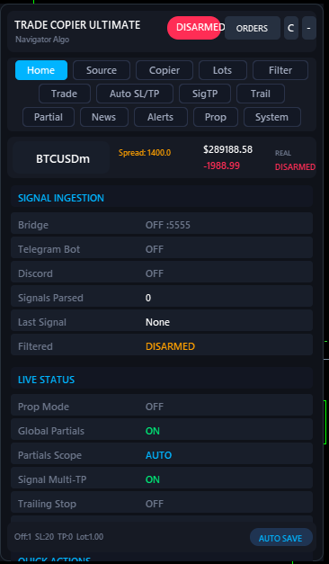
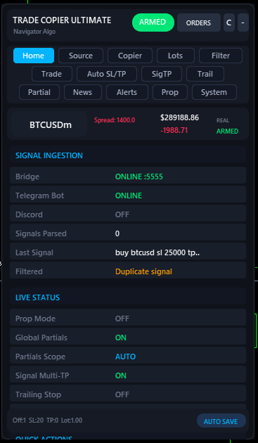
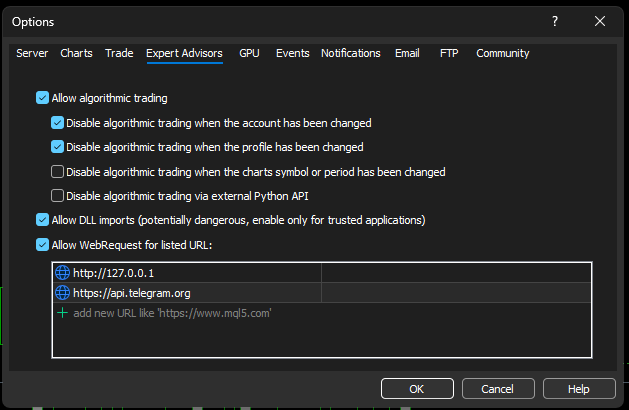
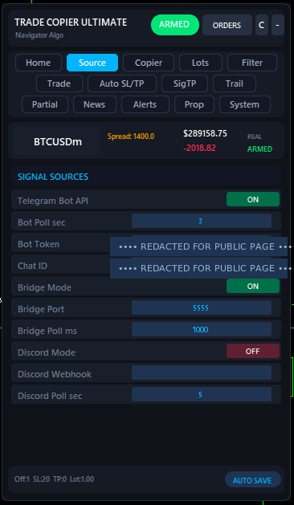
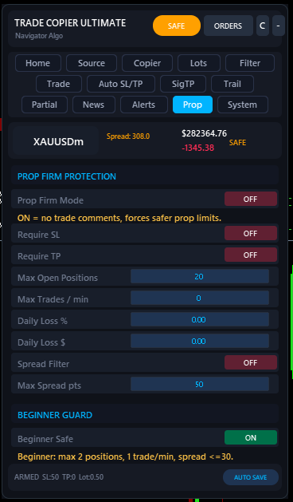
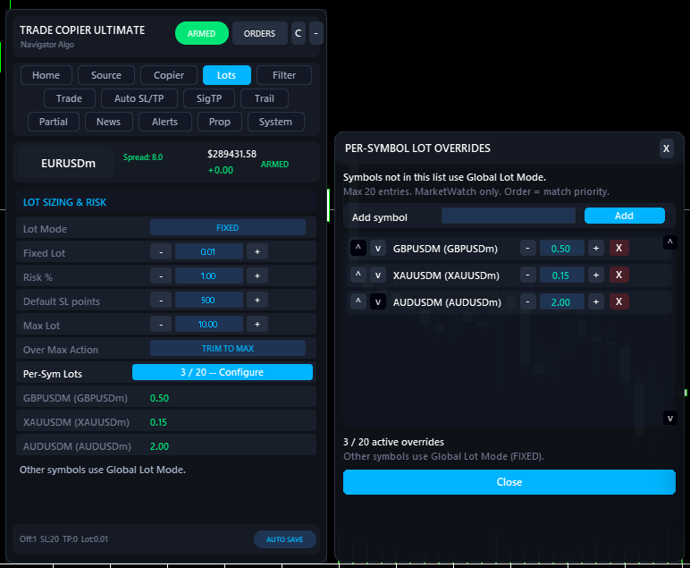
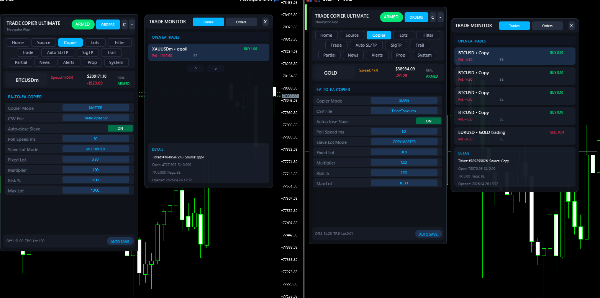

Multi-source signal execution engine for MT5.
Receive signals from Telegram, Discord, or a local Bridge app — and copy trades between two MT5 terminals on the same PC. Safe-by-default. Strict validation. Built for traders who want their signal provider's edge to actually run.


Five steps to your first signal.
- Install from MQL5 Market. If you haven't already, buy or download the demo from the MQL5 product page. After install, the EA shows up under Navigator → Expert Advisors → Trade Copier Ultimate.
-
Allow WebRequest URLs in MT5. Open
Tools → Options → Expert Advisors. Tick Allow WebRequest for listed URL and add both of these (one per line, no trailing slash):http://127.0.0.1
https://api.telegram.orgWithout this, Telegram polling and the Bridge app cannot reach the EA.http://127.0.0.1is only used for the local Bridge — nothing leaves your PC on that URL.
// MT5 → Tools → Options → Expert Advisors - Attach the EA to any chart. Symbol doesn't matter — the EA executes on the symbols inside each signal. Make sure AutoTrading is on (green button in the toolbar) and Allow Algo Trading is checked in the EA dialog.
-
Pick a mode in the on-chart panel. Open the panel, go to the Source tab, and turn on exactly one of:

// Source tab · Bot + Bridge enabled - Telegram Bot API — paste your
Bot TokenandChat ID. The bot must be admin in the channel/group. - Bridge Mode — set the
Bridge Port(default5555) and run the Navigator Command Center app on the same PC. - Discord Mode — paste your
Discord Webhook URL. - Local Copier — choose
MASTERon the source MT5 andSLAVEon the target MT5, with the sameCopierFileName.
- Telegram Bot API — paste your
- Test, then ARM. Click Test Connection in the panel — you should see ONLINE for the mode you enabled. The EA starts in DISARMED state (no trades fire). Click ARM when you're ready. The header pill turns green and the next valid signal will execute.
Every tab, at a glance.



Navigator Command Center.
The Bridge is a small Windows app that runs on the same PC as your MT5. It logs into your Telegram account (read-only via MTProto) so it can read private channels the Bot API can't reach, then routes per-account groups to the right MT5 terminal. Trade Copier Ultimate connects to it on http://127.0.0.1:<port> — nothing ever leaves your machine.
A standalone execution hub
The Bridge handles all the heavy lifting of parsing signals, rewriting formats, and managing multi-account fan-out. Learn more about its features on the dedicated documentation page.


| Bridge feature | What it does |
|---|---|
| MTProto Telegram client | Logs into your own Telegram account (with code + 2FA). Reads any group or channel you're a member of, including private rooms the Bot API cannot reach. |
| Multi-account fan-out | One Bridge can route different Telegram groups to different MT5 terminals. Free MT5 demo + funded prop + main live, each fed by their own provider, from one PC. |
| Local HTTP endpoint | EA polls http://localhost:5555/signals/copier. Loopback only — nothing leaves your machine. Configurable port + optional API key. |
| Duplicate filter | Drops identical messages received within 60s, even across multiple groups. Toggle off if you want each source to fire independently. |
| Routing keywords | Hashtags route to lanes (default #copier, #copy). Advanced: separate TP-manager and pending-order keywords for power users. |
| Skip keywords | Built-in catches for "running", "TP1 hit", "stopped out", past-tense, etc. Add your own phrases for channels with custom wording. |
| Broker symbol suffix | Tell Bridge your broker's symbol suffix (e.g. m, .pro). Auto-detected from the connected EA when possible. |
| Signal history audit | Last 200 messages through the pipeline. Click a row to copy the raw signal text. Filter by Delivered / Queued / Rejected. |
| Auto-start with Windows | Optional — Bridge starts on boot and reconnects Telegram automatically. |
Five ways to feed it signals.
| Mode | How it works | Enable setting |
|---|---|---|
| Bridge Mode | Receives signals from the Navigator Command Center companion app via local HTTP. Supports private Telegram channels and Discord routing on the same machine. | EnableBridgeMode = true |
| Telegram Bot API | Polls a Telegram bot directly for formatted signal messages. Requires bot admin access to the channel or group. | EnableBotAPIMode = true |
| Local Copier | Copies trades between MT5 terminals on the same PC via a shared CSV file. One EA acts as Master (writes trades), another as Slave (reads and executes). | CopierMode = MASTER / SLAVE |
| Discord Mode | Reads signals from a Discord webhook URL at a configurable polling interval. | EnableDiscordMode = true |
| Telegram Broadcast | Forwards your executed trades as messages to a Telegram channel or group. Useful for signal providers running their own room. | EnableTelegramSend = true |
What your provider can send.
| Signal type | Example | What it does |
|---|---|---|
| Market + SL/TP | BUY GOLD SL 2300 TP 2400 |
Executes immediately at market price. |
| Multi-TP market | BUY GOLD SL 2300 TP1 2380 TP2 2420 TP3 2460 |
Splits into 3 positions using LotDistribution (default 40/30/30%). |
| Sequential bare TPs | BUY GOLD SL 2300 TP 2380 TP 2420 TP 2460 |
Unlabelled TP lines auto-assigned as TP1 / TP2 / TP3. |
| Pending order | GOLD BUY LIMIT 2310 SL 2290 TP 2370 |
Places a pending limit or stop order. |
| Pending range entry | GOLD BUY LIMIT 2308-2312 SL 2290 TP 2370 |
Uses the lowest price in the range as entry. |
| Pending + multi-TP | BUY LIMIT GOLD 2310 TP 2350 TP 2390 TP 2430 SL 2290 |
Places 3 separate pending orders, one per TP leg. |
| Close command | CLOSE GOLD · CLOSE ALL · CLOSE BUY GOLD |
Closes matching positions by symbol and/or direction. |
| Breakeven | BREAKEVEN · MOVE SL TO BREAKEVEN |
Moves SL to entry for all open positions. |
| SL/TP modify | BUY GOLD SL 2285 TP 2395 (repeat) |
Updates the existing position instead of opening a duplicate. |
Tip: the parser is case-insensitive and tolerant of common provider quirks (extra emoji, broker-suffixed symbols like EURUSDm ↔ EURUSD, aliases like GOLD → XAUUSD). If a specific provider has odd formatting, the Filter → Custom Symbol Mappings and Filter → Keyword Replace inputs let you rewrite incoming text before parsing.
Four ways to size.
| Mode | Parameter | Description |
|---|---|---|
| Fixed | FixedLotSize |
Always trades a set lot size (e.g. 0.10). Same lot every signal. |
| Multiplier | LotMultiplier |
Multiplies the signal's lot value by a factor (only useful for sources that send a lot). |
| Risk % | RiskPercent |
Calculates lot from account balance, SL distance, and tick value. If the signal has no SL, falls back to DefaultSLPoints. |
| Cap | MaxLotSize |
Safety ceiling regardless of mode. Set Over Max Action to TRIM or SKIP. |
Multi-TP example: BUY GOLD SL 2290 TP1 2360 TP2 2400 TP3 2450 with 0.10 lots and default distribution → Position 1: 0.04 / Position 2: 0.03 / Position 3: 0.03.
Different lot per symbol.
Some symbols carry more risk than others. With v7 you can pin a different lot to each symbol from a visual editor — no input strings, no comma-separated syntax, no restart. The Lots tab has a Configure button that opens an overrides panel: type a symbol, click Add, TCU validates against your MarketWatch and rejects typos before saving. Suffixed brokers (EURUSDm, XAUUSD.pro) are matched automatically; the resolved name is shown beside the typed one.

| Action | What it does |
|---|---|
| Add | Type a symbol, click Add. MarketWatch-validated. Suffix-tolerant. 20-entry cap. |
| Edit lot | Click the lot value, type, press Enter. Or use + / − for broker-step nudges. Or use ↑ / ↓ to reorder priority. |
| Live preview | Lots tab shows up to 10 active overrides under the Configure button. The footer shows N / 20 active at all times. |
| Fallthrough | Symbols not listed use your Global Lot Mode (Fixed, Risk %, Multiplier, or Market). No silent skips. |
Backward compatible: if you previously used the EURUSD=0.05, XAUUSD=0.03 input string, those settings load identically into the visual editor.
What it does after entry.
Why it won't blow up your account.
EURUSDm ↔ EURUSD, XAUUSD ↔ GOLD. No manual setup needed for most brokers.MT5 → MT5 (and MT4) on one PC.
| Feature | Detail |
|---|---|
| Copy speed | ~50 ms default — configurable via CopierPollMs. |
| Cross-broker | Works between different brokers on the same PC. Symbol suffix differences handled automatically. |
| SL / TP sync | When the master modifies SL/TP, the slave position updates automatically. |
| Partial close sync | When the master partially closes, the slave reduces proportionally. |
| Auto-close | Slave closes when master closes. Optional — disable for independent management. |
| Initial sync | On first connect, existing master trades are registered without re-copying. No duplicates on attach. |
| MT4 slave | Free companion EA NTS Local Copier — MT4 Slave on MQL5 mirrors trades to any MT4 terminal on the same PC. |

Something not working?
Bridge says BLOCKED or Telegram won't connect
Tools → Options → Expert Advisors and confirm Allow WebRequest for listed URL is ticked, with both http://127.0.0.1 and https://api.telegram.org on separate lines (no trailing slash). Click OK, then click Test Connection in the EA panel again. If it still fails, your VPS or Windows firewall is blocking outbound HTTP from terminal64.exe — whitelist it.
Telegram bot is connected but no signals arrive
Chat ID (negative number for groups, positive for DMs) — use @userinfobot to read it.
Signals come in but no trade opens
The same trade opens twice
Wrong lot size
Pending order never fills
EnablePendingExpiry + PendingExpiryHours.
Broker symbol is named differently (e.g. BTCUSDm, XAUUSD.cash)
m, .pro, #, .raw, .cash) automatically. If your broker uses something exotic, fill in Filter → Custom Symbol Mappings with a comma-separated list like EURUSD:EURUSDm,XAUUSD:GOLD. The first value is the signal's symbol, the second is your broker's.
Multi-TP split is missing a leg
Panel disappears or settings reset after restart
MQL5/Files/Common/. If F7 inputs disagree with the saved panel state, the EA prefers the saved panel. To reset everything clean: remove the EA, run F3 → Global Variables, delete every variable starting with TCU_, then re-attach. If the panel visually disappears (no settings lost), drag the chart edge to redraw — known cosmetic glitch on rare DPI configurations.
EA freezes / lots of CPU on tick
Can I run it on a prop-firm account?
Where are my settings / bot tokens stored?
MQL5/Files/Common/TCU_*.cfg on your PC. Don't share that file — it contains your Telegram bot token, which gives full bot control to anyone who has it. If you ever post a settings export for support, redact the token line first.
What this EA does not do.
Always test on a demo account before going live. Behaviour differs between Hedging and Netting accounts; verify your account type and re-run your edge cases. Past performance of any signal provider does not guarantee future results.
Demo versions from MQL5 run only inside the Strategy Tester. For end-to-end live testing on a demo broker account, use the paid version on a demo MT5 login.